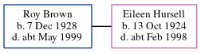

Roy Percival Brown 1928 - c1999
[ Home ] | [ Calendar ] | [ Surnames Index ] | [ Census Index ] | [ Family History ]Roy Brown, the husband of Eileen Frances Hursell (the third cousin once-removed on the mother's side of Nigel Horne), was born on Dec 7, 19281,2. On Sep 29, 1939, he was living at 10 Queen Street, Ashford, Kent, England1.
He died c. May 1999 in Canterbury, Kent, England2.
Citations
- 1939 Register - Findmypast (was the son of the head of the household)
- England & Wales deaths 1837-2007 - Findmypast
Media
England & Wales deaths 1837-2007 - BMD/D/1999/4/82968693
1939 Register - TNA/R39/1681/1681H/002/17
Family Tree
Generated by ged2site. Last updated on Jun 11, 2024